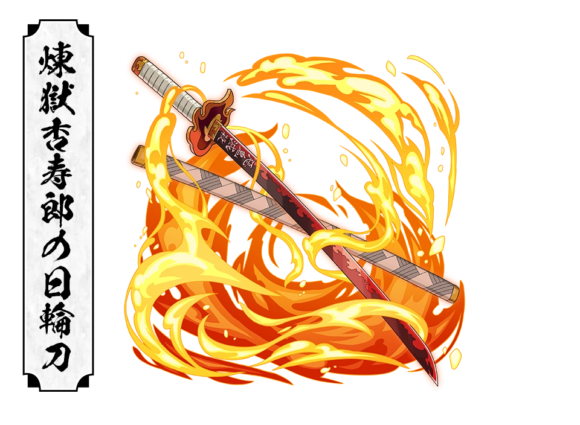

Kyojuro Rengoku is one of the most beloved and inspiring characters in Demon Slayer: Kimetsu no Yaiba. As the Flame Hashira of the Demon Slayer Corps, he is renowned for his extraordinary swordsmanship, unwavering optimism, deep sense of justice.
He dedicates his life to protecting innocent people and upholding the values passed down by his mother. His bravery and selflessness make him a symbol of hope withing the Corps, and his actions leave a lasting impact on Tanjiro Kamado and his companions.
Basic Information
Full Name : Kyojuro Rengoku
Japenese Name : 煉獄 杏寿郎
Alias : Flame Hashira
Gender : Male
Race : Human
Age : 20
Birthday : May 10
Height : 177cm (5'10")
Weight : 72 kg (159 lbs)
Hair Color : Yellow with Red Tips
Eye Color : Golden with Red Irises
Occupation : Demon Slayer
Rank : Hashira
Affiliation : Demon Slayer Corps
Breathing Style : Flame Breathing
Status : Deceased
Appearance
He has striking yellow hair with fiery red tips, thick black eyebrows, and bright golden eyes with red pupils that resemble burning flames. His appearance perfectly reflects his energetic personality and his title as the Flame Hashira
He wears the standard Demon Slayer Corp uniform beneath a white clock with flame-shaped red and yellow patterns along the edges. His confident posture and warm smile often inspire courage in those around him.
Personality
He is cheerful, enthusiastic, and incredibly passionate about his duties as a hashira. he belives that those blessed with strength have a responsibility to protect the weak.
Despite his immense power, he remains humble, respectful and kind towards everyone. His optimism never fades, even in the face of death. Inspired by his mother's teachings, he lives according to strong moral principles and always places others before himslef.
His courage, determination and unwavering spirit motivate Tanjiro, Zenitsu, and Inosuke to continue fighting even after his death.
Fighting Style
As the flame hashira, he is an exceptional swordsman who has mastered flame breathing to its highest level. His attacks are powerful, explosive and precise, overwhelming opponents with relentless speed and strength.
his swordsmanship combine incredible offensive power with remarkable endurace, allowing him to battle even the strongest demons without hesitation.
Flame Breathing Forms
FIrst Form : Unknowing Fire
Second Form : Rising Scorching Sun
Third Form : Blazing Universe
Fourth Form : Blooming Flame Undulation
Fifth Form : Flame Tiger
Ninth Form : Rengoku
Nichirin Sword

Color : Bright Red
Type : Katana
Guard : Flame Shaped Guard
Speciality : Optimized for Flame Breathing Techniques
The words "Destroy Demons" are engraved along the blade.
Abilites
Master Swordsman
Flame Breathing Master
Extraordinary Physical Strength
incredible Speed
Exceptional Reflexes
Enhanced Stamina
High Durability
Strong Leadership
Tactical Intelligence
Unbreakable Willpower
Major Battles
Flute Demon
Successfully defeated the demon during an early mission
Mugen Train Mission
Protected more thank 200 passengers from Enmu's attacks while simultaneously leading Tanjiro, Zenetsu, Inosuke, Nezuko
Battle Against Akaza
Rengoku fought Upper Rank Three Akaza alone in one of the greatest battles of the series despite suffering fatal injuries, he prevented Akaza from harming the passengers and inspired everyone with his determination until his final moments.
Relationships
Tanjiro Kamado
Rengoku becomes Tanjiro's mentor and greatest inspiration. His words countinue motivating tanjiro throughout the series
Senjuro Rengoku
His younger brother whom he deeply loves and encourages
Shinjuro Rengoku
His father, the former flame Hashira. Although their Relationship becomes strained after his mother's death, rengoku never stops respectinf him
Ruka Rengoku
His late mother whose teachings shaped his entire philosophy of life
Mitsuri Kanroji
Mitsuri trained under him before becoming the love hashira and she deeply respects him
Trivia
Fav food : Sweet Potatoes
He loves eating while loudly saying "UMA!!!!"
flame patterned haori symbolizes the legacy of rengoku family
comes from a long line of flame hashira
he became one of the most popular Demon Slayer characters worldwide
his battle against akaza is considered one of the greatest fights in anime